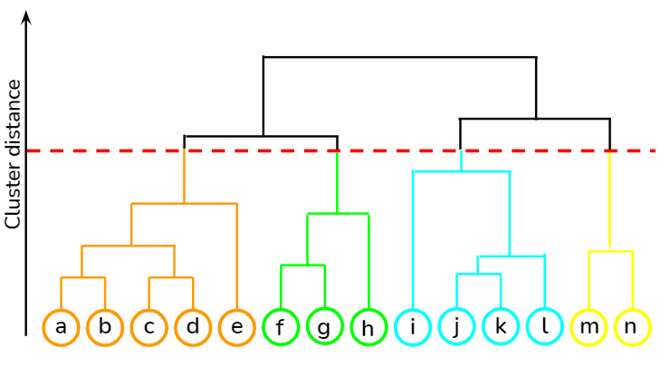

Analysis of GDP Related to Pandemic
Contents
Analysis of GDP Related to Pandemic¶
Author: Songhan (Hanson) Hu, Songhanh@uci.edu, Linkedin:Songhan Hu
Course Project, UC Irvine, Math 10, S22
Introduction¶
Gross domestic product (GDP) is the standard measure of the value added created through the production of goods and services in a country during a certain period. As such, it also measures the income earned from that production, or the total amount spent on final goods and services.
The GPD is the most important concern in Macroeconomy. As the covid-19 hitted all over the world, the economist are trying to get the relation between them and find the impact on GPD due to pandemic. Then I will first analyze the trend of GPD with covid, and then find the impact on GDP due to covid. Lastly, I will conclude wether the cases or deaths influences GDP.
Main portion of the project¶
(You can either have all one section or divide into multiple sections)
import xlrd
import pandas as pd
import altair as alt
from sklearn.linear_model import LinearRegression
from sklearn.cluster import KMeans
from sklearn.neighbors import KNeighborsRegressor
from sklearn.metrics import mean_squared_error
from sklearn.cluster import AgglomerativeClustering
Data importing and adjusting¶
Here I have two data set one is gdp and one is covid-19 dataset. However, these datasets are ugly which means many of the dataset are useless and need to be improved or rescaled. In this part, I will adjust the dataset and make them useful and helpful.
gdp = pd.read_excel('/work/P2 GDP WEO_Data1.xls')
cov = pd.read_csv('/work/covid.csv')
It is not useful to use the GDP out of time. So I only use gdp from 2010 to now here. Then, if the column name is float or int, we cannot apply them to sklearn. So I convert the name to strings.
cols = [i for i in range(1980,2023) if i >=2010]
strs = [i for i in gdp.columns if gdp[i].dtypes == 'object']
gdp = gdp[strs+cols]
cols_str = [str(i) for i in cols]
for i in range(len(cols)):
gdp = gdp.rename({cols[i]:cols_str[i]},axis = 1)
For covid dataset, I cleaned it to make it readable and useful.
cov = cov[['location','total_cases', 'total_deaths_per_million','total_vaccinations','total_vaccinations_per_hundred','population']]
For the next cell, I merged these datasets to a single one, then I can easily get relationship by applying the sklearn. Though some of the country is missing by doing merge because the covid dataset and the GDP dataset contains different numbers of countries. However the remaining data is enough for analysis.
cov = cov.rename({'location':'Country'},axis = 1)
df = gdp.merge(cov, how='inner')
df = df.dropna()
Identify the country type¶
developed or developing?¶
Here I want to cluster the country by developed and developing by there GDPs. I hope the covid will impact these different types of country differently. As the original dataset does not contains country type, clustering by their GDP will be a good choice to get the country type.
As we know, America is a big country who has much more GPD than others,so it is not possible to cluster them by overall GAP. Instead, we should calculate GDP per person by rescaling.
#rescale
df['Scale'] = 'thousand'
df[cols_str] = df[cols_str]*1000000
cols_per = []
for i in cols:
cols_per.append(f'per{i}')
for i in range(len(cols_per)):
df[cols_per[i]] = df[cols_str[i]]/df['population']
df
| Country | Subject Descriptor | Units | Scale | Country/Series-specific Notes | 2010 | 2011 | 2012 | 2013 | 2014 | ... | per2013 | per2014 | per2015 | per2016 | per2017 | per2018 | per2019 | per2020 | per2021 | per2022 | |
|---|---|---|---|---|---|---|---|---|---|---|---|---|---|---|---|---|---|---|---|---|---|
| 1 | Albania | Gross domestic product, current prices | U.S. dollars | thousand | See notes for: Gross domestic product, curren... | 11937000.0 | 12899000.0 | 12324000.0 | 12784000.0 | 13246000.0 | ... | 4.449806 | 4.610618 | 3.964240 | 4.128880 | 4.543439 | 5.275791 | 5.360026 | 5.277184 | 6.374668 | 6.245183 |
| 2 | Algeria | Gross domestic product, current prices | U.S. dollars | thousand | See notes for: Gross domestic product, curren... | 161207000.0 | 200020000.0 | 209059000.0 | 209755000.0 | 213810000.0 | ... | 4.701274 | 4.792160 | 3.720115 | 3.586869 | 3.814878 | 3.930642 | 3.834221 | 3.308184 | 3.688401 | 4.339212 |
| 4 | Angola | Gross domestic product, current prices | U.S. dollars | thousand | See notes for: Gross domestic product, curren... | 83799000.0 | 111790000.0 | 128053000.0 | 136710000.0 | 145712000.0 | ... | 4.028749 | 4.294032 | 3.424157 | 2.980054 | 3.595904 | 2.986803 | 2.490628 | 1.716705 | 2.195316 | 3.679597 |
| 5 | Antigua and Barbuda | Gross domestic product, current prices | U.S. dollars | thousand | See notes for: Gross domestic product, curren... | 1149000.0 | 1138000.0 | 1200000.0 | 1181000.0 | 1250000.0 | ... | 11.962159 | 12.661049 | 13.542258 | 14.555141 | 14.869135 | 16.266915 | 17.097480 | 13.876509 | 14.777976 | 16.418848 |
| 6 | Argentina | Gross domestic product, current prices | U.S. dollars | thousand | See notes for: Gross domestic product, curren... | 424729000.0 | 527644000.0 | 579666000.0 | 611471000.0 | 563614000.0 | ... | 13.407740 | 12.358378 | 14.087324 | 12.208397 | 14.117956 | 11.499211 | 9.906959 | 8.531016 | 10.713654 | 12.372916 |
| ... | ... | ... | ... | ... | ... | ... | ... | ... | ... | ... | ... | ... | ... | ... | ... | ... | ... | ... | ... | ... | ... |
| 163 | Vanuatu | Gross domestic product, current prices | U.S. dollars | thousand | See notes for: Gross domestic product, curren... | 652000.0 | 738000.0 | 736000.0 | 755000.0 | 774000.0 | ... | 2.400911 | 2.461331 | 2.365931 | 2.464511 | 2.798413 | 2.954233 | 2.957413 | 3.160934 | 3.021014 | 3.227714 |
| 164 | Venezuela | Gross domestic product, current prices | U.S. dollars | thousand | See notes for: Gross domestic product, curren... | 318281000.0 | 352540000.0 | 352191000.0 | 258993000.0 | 203822000.0 | ... | 9.022591 | 7.100588 | 11.273144 | 9.728253 | 5.011018 | 3.427981 | 2.228187 | 1.646232 | 1.619965 | 1.710019 |
| 165 | Vietnam | Gross domestic product, current prices | U.S. dollars | thousand | See notes for: Gross domestic product, curren... | 143212000.0 | 171312000.0 | 195169000.0 | 212728000.0 | 232888000.0 | ... | 2.166961 | 2.372321 | 2.412120 | 2.568494 | 2.822393 | 3.087446 | 3.339889 | 3.493380 | 3.730319 | 4.165752 |
| 166 | Yemen | Gross domestic product, current prices | U.S. dollars | thousand | See notes for: Gross domestic product, curren... | 30907000.0 | 32726000.0 | 35401000.0 | 40415000.0 | 43229000.0 | ... | 1.325489 | 1.417779 | 1.392034 | 1.027135 | 0.880336 | 0.708611 | 0.717860 | 0.617895 | 0.722123 | 0.922709 |
| 168 | Zimbabwe | Gross domestic product, current prices | U.S. dollars | thousand | See notes for: Gross domestic product, curren... | 12042000.0 | 14100000.0 | 17116000.0 | 19093000.0 | 19499000.0 | ... | 1.265093 | 1.291994 | 1.323136 | 1.361964 | 1.416960 | 2.447825 | 1.523638 | 1.533643 | 2.157940 | 2.410985 |
145 rows × 36 columns
Then I use cluster algorithm by putting the input of GDP per person from 2010 to 2020. And I will get two cluster representing the developed country and developing country. However, due to the randomness of the algorithm, it is hard to tell wehther the 1 or 0 represents the developed country. Here I notice that the number of developed country is much less than the number of developing country. So I count the value in the pred column of df and use sort value to tell whether the country type is developing or developed.
k = KMeans(n_clusters = 2)
k.fit(df[cols_per])
df['pred'] = k.predict(df[cols_per])
#create a col noting the country type
df['type']= 0
df.loc[df['pred'] == (df.groupby('pred').count()['type'].sort_values(ascending=False).index[1]), 'type'] = 'developed'
df.loc[df['pred'] == (df.groupby('pred').count()['type'].sort_values(ascending=False).index[0]), 'type'] = 'developing'
df['Country'][df['type']=='developed']
9 Australia
10 Austria
16 Belgium
29 Canada
39 Denmark
52 Finland
53 France
56 Germany
67 Iceland
71 Ireland
72 Israel
73 Italy
75 Japan
88 Luxembourg
107 Netherlands
108 New Zealand
113 Norway
124 Qatar
129 San Marino
135 Singapore
145 Sweden
146 Switzerland
158 United Arab Emirates
159 United Kingdom
160 United States
Name: Country, dtype: object
As shown above, no matter how many time we run the notebook, the developed countries is still the same and it is similar to the real world condition.
use1 = ['Country']+cols_per
To make a graph to show the country type and the trend of GDP change, here I create another list called use1. And I use pd.melt to create two subdataset that the it convert years to a new column and with the gdp_perwhich stands for gdp per peroson each year after that.
To mark both the country type and the country name, I create two altair charts and combine them together. The dashed lines in the bottom represent the developing countries, and the solid lines in the upper represent the developed country. To measure each counties’ trend of GDP growth, people can touch the line and get a clearer view of the country.
df_ = pd.melt(df.loc[df['type']=='developed',use1],id_vars= 'Country',var_name= 'year',value_name = 'gdp_per_person')
df__ = pd.melt(df.loc[df['type']=='developing',use1],id_vars= 'Country',var_name= 'year',value_name = 'gdp_per_person')
sel = alt.selection_single(fields = ["Country"])
c = alt.Chart(df_).mark_line().encode(
x = 'year',
y = 'gdp_per_person',
color = 'Country',
tooltip = 'Country',
size = alt.condition(sel, alt.value(5), alt.value(0.5))
).add_selection(
sel
).properties(width = 500, height = 500)
sel1 = alt.selection_single(fields = ["Country"])
c1 = alt.Chart(df__).mark_line(strokeDash=[5,1]).encode(
x = 'year',
y = 'gdp_per_person',
color = 'Country',
tooltip = 'Country',
size = alt.condition(sel, alt.value(3), alt.value(0.5))
).add_selection(
sel1
).properties(width = 500, height = 500)
c+c1
From the graph shown above, we know that there is a big recession in 2020, and we assume it is caused by the covid. So I will analyze the influence in 2020.
Analyze the GPD change in 2020 and visualize them in differen ways¶
In both developed country and developing country¶
I will use K-Nearest Neighbors to predict the 2020 to 2022 gpd by using the data from previous.
K-Nearest Neighbors: approximates the association between independent variables and the continuous outcome by averaging the observations in the same neighbourhood.
So it is a good tool to predict the same type of value by using the previous value as input. Here I train the regressor by using the input of gpd per person from 2010 to 2018 and the output of GPD per person in 2019 and I regard them as training set. And then I predict the GDP in 2020 to 2022 by the regressor and assume it is the GDP without the influence of covid-19. After that I can compare them and give the result of the impact on GDP by covid-19.
inputs = cols_per[0:-4]
error1 = []
error2 = []
reg = KNeighborsRegressor(n_neighbors=9)
reg.fit(df[inputs], df[f'per2019'])
for i in range(0,3):
df[f'pred202{i}'] = reg.predict(df[inputs])
for a,b in df.groupby('type'):
if a == 'developed':
error1.append(mean_squared_error(b[f'pred202{i}'],b[f'per202{i}']))
else:
error2.append(mean_squared_error(b[f'pred202{i}'],b[f'per202{i}']))
analyze the change of GDP in 2020¶
#error in developed country
error1
[123.73159716635124, 304.6733651690489, 393.7136375339568]
# error in developing country
error2
[2.8704758794965537, 3.7373161812054643, 6.160379861494811]
After the regression, I use mean_squared_error to measure how the covid-19 influenced the developing country and developed country. And the error is the error between the real GDP in 2020 to 2022 and predicted GDP in that time period. As the error shown above, we know that the predicition of GDP of countries in the pandemic generated by data from 2010-2019 is precise in the developing country but not developed country. Then we know that the pandemic leads heavior impact on developed country. The possible reason can be they have higher gdp and it is unstable.
Here is the graph of predicted GDP in 2020 and the real GDP in 2020.
e1 = alt.Chart(df).mark_circle().encode(
x = 'per2020',
y = 'pred2020',
color = 'type',
tooltip = ['Country']
)
df['diff2020'] = df['per2020']-df['pred2020']
e2 = alt.Chart(df).mark_boxplot().encode(
y = 'diff2020',
color = 'type',
tooltip = ['Country']
)
e1|e2
As shown by graph, some of the countries earns a lot by the covid 19. That is, the predicted GDP is much higher than the real one. The possible reason is they make money by selling medical stuffs like masks or, they have high amount of oil, minerals or gold whose prices increase alot during the pandemic.
However, these data will influence badly the overall trend. By the statistic method, we use box plot and IQR to get rid of the outliers.
IQR = (0.73-(-4.15))
condition = ((df['per2020']-df['pred2020']) > 1.5*IQR) |((df['per2020']-df['pred2020']) < -1.5*IQR)
df = df.drop([i for i in df.index if condition[i]])
error_new1 = []
error_new2 = []
for i in range(0,3):
for a,b in df.groupby('type'):
if a == 'developed':
error_new1.append(mean_squared_error(b[f'pred202{i}'],b[f'per202{i}']))
else:
error_new2.append(mean_squared_error(b[f'pred202{i}'],b[f'per202{i}']))
print(error_new1,error_new2)
[15.375965925629604, 70.8887051856516, 140.42010373233038] [2.8704758794965537, 3.7373161812054643, 6.160379861494811]
Though I get rid of the outliers, the covid still influenced much more in the developed countries.
To compare the real GDP and predicted GDP without the outlier, I create a reference line which is one to one and just like the function x=y. If the point lies above the line, we conclude that the predicted value is larger than the real GDP, which means the covid-19 influenced badly to the country. Vice versa.
df['reference'] =df['per2020']
g = alt.Chart(df).mark_circle().encode(
x = 'per2020',
y = 'pred2020',
color = 'type',
tooltip = ['Country']
)
h = alt.Chart(df).mark_line(color = 'green').encode(
x = 'per2020',
y = 'reference',
)
f = alt.Chart(df).mark_boxplot().encode(
y = 'diff2020',
color = 'type',
tooltip = ['Country','type']
)
g+h|f
Shown by the graph, we can clearly obsere that more countries lie above the refrence line, which means the covid lead overall GDP decreases. And showing by the box plot, we notice the median is around -0.166 in developing country and -2.34 in developed country. Comparing the data between developed countries and developing countries, we know that the GDP falls more in developed countries and more developed countries suffers from covid-19.
for a,b in df.groupby('type'):
if a == 'developed':
df1 = b
else:
df2 = b
xx = []
yy = []
for i in '2020','2021','2022':
df1['diff'+i] = df1['per'+i]-df1['pred'+i]
df2['diff'+i] = df2['per'+i]-df2['pred'+i]
df['diff'+i] = df['per'+i]-df['pred'+i]
xx.append(df1['diff'+i].mean())
yy.append(df2['diff'+i].mean())
print(xx,yy)
[-0.9660670025787338, 6.193606870480478, 8.958631077387134] [-0.6047115740648462, 0.3367765054459885, 0.9797121595719122]
Similarly, in 2020, the mean of difference between real GDP per person and perdicted GDP is smaller in developed country which is -0.966.
s = []
for i in range(0,3):
if i == 0:
s.append(alt.Chart(df1).mark_circle(color = 'blue').encode(
x = 'Country',
y = alt.Y(f'diff202{i}',scale = alt.Scale()),
tooltip = [f'per202{i}',f'pred202{i}']
))
else:
s.append(alt.Chart(df1).mark_circle(color = 'green',size = 10).encode(
x = 'Country',
y = alt.Y(f'diff202{i}',scale = alt.Scale()),
tooltip = [f'per202{i}',f'pred202{i}']
))
p = []
for i in range(0,3):
if i == 0:
p.append(alt.Chart(df2).mark_circle(color = 'red').encode(
x = 'Country',
y = alt.Y(f'diff202{i}',scale = alt.Scale()),
tooltip = [f'per202{i}',f'pred202{i}'],
))
else:
p.append(alt.Chart(df2).mark_circle(color = 'orange',size = 10).encode(
x = 'Country',
y = alt.Y(f'diff202{i}',scale = alt.Scale()),
tooltip = [f'per202{i}',f'pred202{i}'],
))
(s[0]+s[1]+s[2])|(p[0]+p[1]+p[2])
The charts showb above is the difference in GDP between the predicted and real one in 2020 to 2022. And the bigger, colored line is the difference in 2020. However, as shown in the chart, we can see the much of difference in 2021 and 2022 in both developed and developing counties lies above 0. It means they are recovering.
Use hierachical clustering to show whether the country is influenced positively, negatively, or not being influenced.¶
After learing hierachical clustering, I found the main advantage compare to the kmeans is that it begins with every point of input, instead of creating a random center like kmeans. I think in this way I can get a better cluster by bad, median and good.

df['rate2020'] = (df['per2020']-df['per2019'])/df['per2019']
I uses two inputs which are different in GDP in 2020 and the change rate of GDP in 2020. I hope I can get a chart and the influence type is from left lower side to the right upper side with negative influenced, non-influenced ,and positive influenced
hie = AgglomerativeClustering(n_clusters= 3)
hie.fit(df[['diff2020','rate2020']])
df['influence'] = hie.fit_predict(df[['diff2020','rate2020']])
Just like I did in country type cluster, here I use same method to cluster the influence type of each country.
df['type_influence'] = 0
df.loc[df['influence'] == (df.groupby('influence').count()['type_influence'].sort_values(ascending=False).index[0]), 'type_influence'] = 'non'
df.loc[df['influence'] == (df.groupby('influence').count()['type_influence'].sort_values(ascending=False).index[1]), 'type_influence'] = 'negative'
df.loc[df['influence'] == (df.groupby('influence').count()['type_influence'].sort_values(ascending=False).index[2]), 'type_influence'] = 'positive'
alt.Chart(df).mark_circle().encode(
x = alt.X('rate2020',scale=alt.Scale(zero = False)),
y = alt.Y('diff2020'),
color = alt.Color('type_influence',scale=alt.Scale(scheme = 'category10')),
tooltip = ['Country']
)
As shown by the graph, we appoximately get what we want and we know that most of the countries are clustered as non-influenced due to their low gdp; and many countries are classified as negative influenced countries.
for a,b in df.groupby('type'):
for i in df['type_influence'].unique():
if a == 'developed':
print(f'The developed country has {(b["type_influence"] == i).sum()} {i} influenced type')
print(f'and {((b["type_influence"] == i).sum()/b.shape[0])*100}% developed country is {i} influenced type')
else:
print(f'The developing country has {(b["type_influence"] == i).sum()} {i} influenced type')
print(f'and {((b["type_influence"] == i).sum()/b.shape[0])*100}% developing country is {i} influenced type')
The developed country has 7 non influenced type
and 33.33333333333333% developed country is non influenced type
The developed country has 11 negative influenced type
and 52.38095238095239% developed country is negative influenced type
The developed country has 3 positive influenced type
and 14.285714285714285% developed country is positive influenced type
The developing country has 89 non influenced type
and 74.16666666666667% developing country is non influenced type
The developing country has 30 negative influenced type
and 25.0% developing country is negative influenced type
The developing country has 1 positive influenced type
and 0.8333333333333334% developing country is positive influenced type
Shown by the data above, ignoring the non-influenced type, it is clear that there is a decreasing trend of GDP in 2019. In addition, it is more influencial in developed country as 52.38% country are influencd negatively during that time, compared by 25% developing country are negatively influenced that time.
Is the covid cases matter?¶
In the last part, I will briefly show wether the covid cases and the death cases lead the imapct on GDP. And at last I will give some possible reasons of GDP change.
As usual, we will rescale the data because of the different population in counties.
#rescale
df['per_case'] = (df['total_cases']/df['population'])
As we need to use the sub-dataframe again to fit the Linear Regression seperately, we still need re-create the df1 and df2 as we changed the df
for a,b in df.groupby('type'):
if a == 'developed':
df1 = b
else:
df2 = b
for i in df1,df2:
reg1 = LinearRegression()
reg1.fit(i[['per2019','per_case']],i['per2020'])
i['pred_reg'] = reg1.predict(i[['per2019','per_case']])
print(reg1.coef_,reg1.intercept_)
[0.87068984 9.6550446 ] 3.8582015649896917
[ 0.93670594 -2.53976307] -0.00696001627589915
As shown above, we could not get any useful information by the coefficient and the intercept. Then I want to draw a graph to visualize the relationship.
In the graph below, people can drag the lower graph and then the upper graph will be a zoom in of lower graph. In this case, people can see the relation between the covid_deaths and cases by looking their position in both graphs.
brush = alt.selection_interval()
alt.data_transformers.enable('default')
b1 = alt.Chart(df).mark_circle().encode(
x = 'total_deaths_per_million',
y = 'diff2020',
color = 'type',
tooltip = 'Country',
).add_selection(brush).properties(
width = 600,
height = 300
)
b2 = alt.Chart(df).mark_circle().encode(
x = 'per_case',
y = 'diff2020',
color = 'type',
tooltip = 'Country'
).transform_filter(brush).properties(
width = 600,
height = 300
)
b2&b1
As shown by the chart above, we could not find a claer linear relation between the death cases and the difference in GDP or the covid-19 cases and the different in GDP.
So the reason why GDP decreases in many countries during the pandemic is not simply the large number of covid cases or death cases. It may because of the different way the country treated the covid. For instance, China used to do a really good job of pandemic prevention but now the government makes it too radical that they even lock down some big cities like Shanghai. In this case, China’s GDP growth rate falls.
Summary¶
In the project, I first classified the countried to be developed and developing by measuring their GDP per person. Then I analyzed the GDP change in 2020 and predict the GDP without Covid-19. After that I know that the pandemic lead a higher impact on the developed countries. At last, I know that the negative change of GDP in 2020 is not simply because of the number of covid cases or the death cases. By Econ 105C due to rising nationalism and industrial sovereignty protectionism, many countries have imposed export bans, resulting in shortages of medical supplies such as medicines, personal protective equipment (PPE) and other medical products. As a result, domestic value chains have come under increased pressure and GDP has fallen in covid period.
References¶
What is the source of your dataset(s)?
World GPD : https://www.kaggle.com/datasets/bhargavkumarmaddina/world-gdp-dataset-by-bhargav-kumar-m
Covid Data : https://www.kaggle.com/datasets/deepshah16/covid19-dataset?select=covid.csv
Were any portions of the code or ideas taken from another source? List those sources here and say how they were used.
I used the way in Econ 105C to measure GDP.
All the ideas are developed by my own. And I asked Prof.Davis for the use of pf.melt and I look up xlrd by kaggle.
I used wikipedia to look up the hierarchical_clustering https://en.wikipedia.org/wiki/Hierarchical_clustering
![Created in deepnote.com]() Created in Deepnote
Created in Deepnote